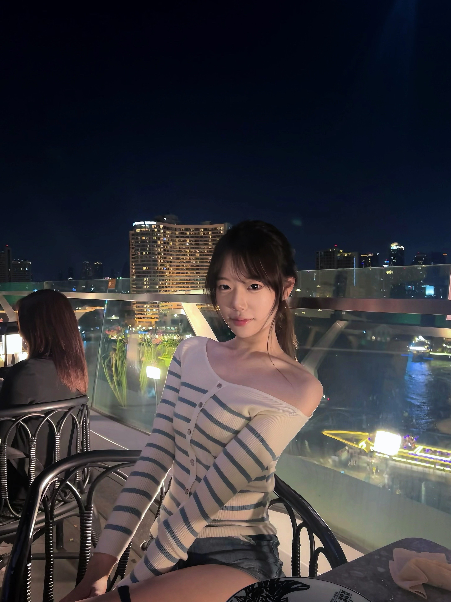
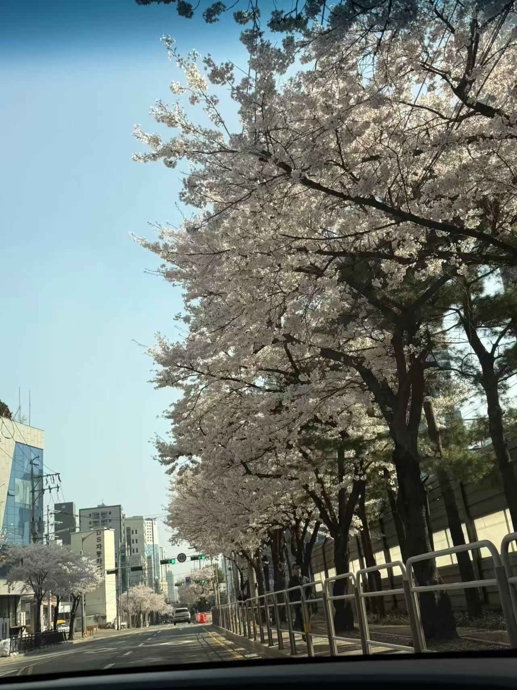
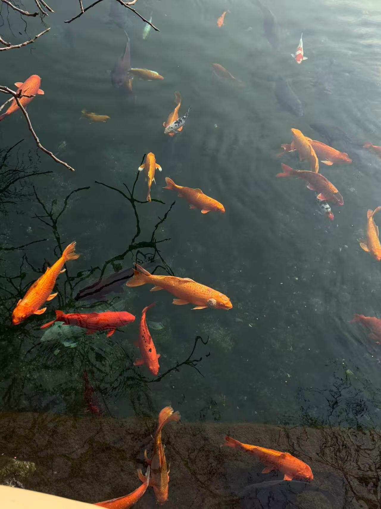
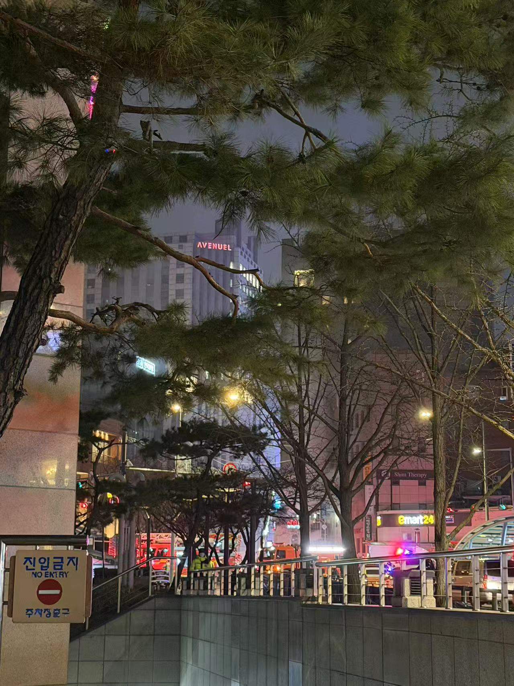
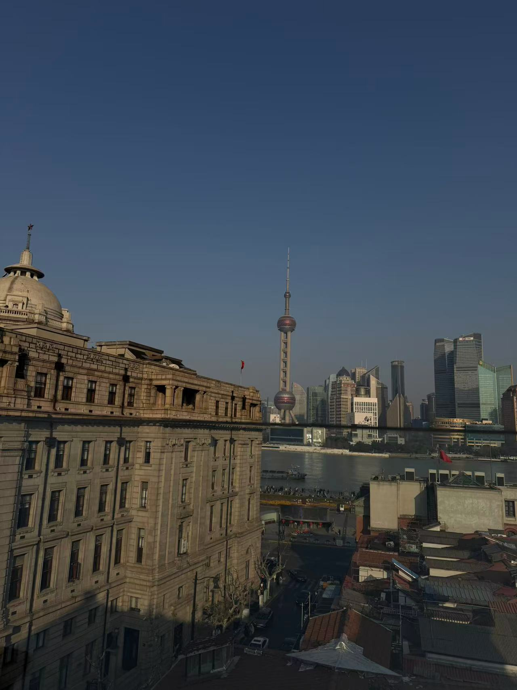
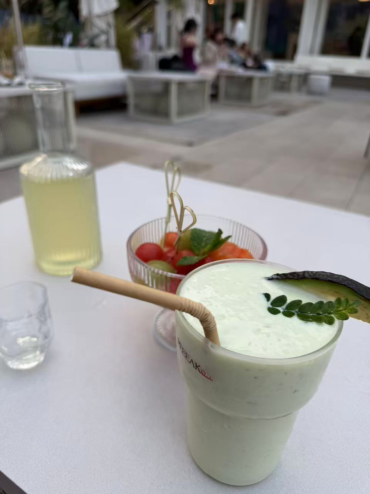
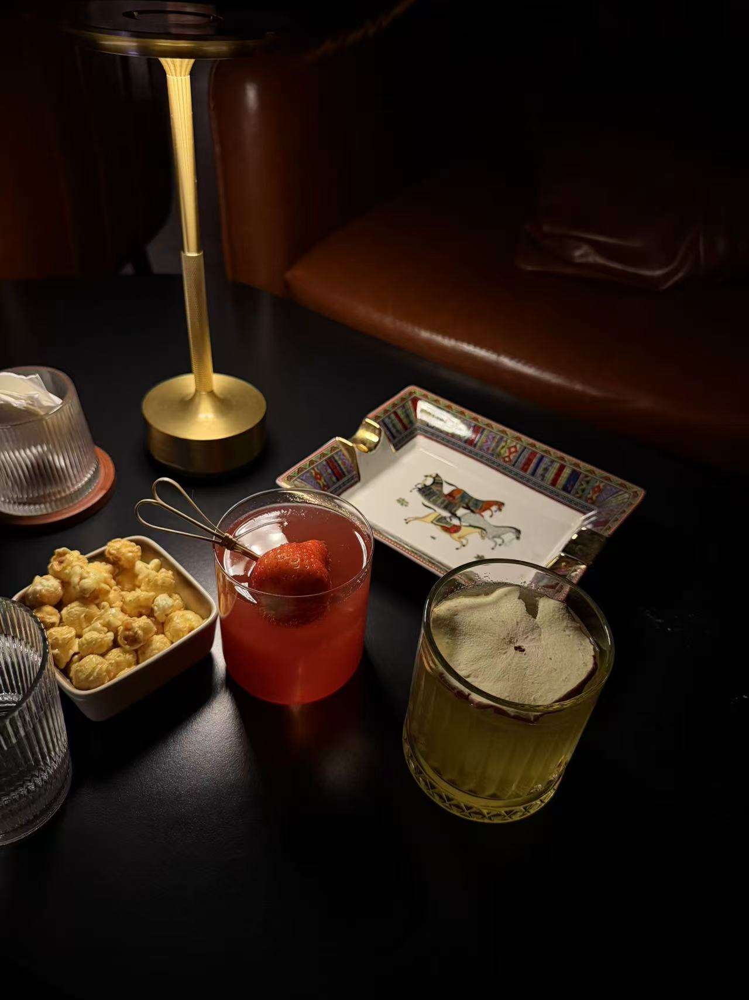
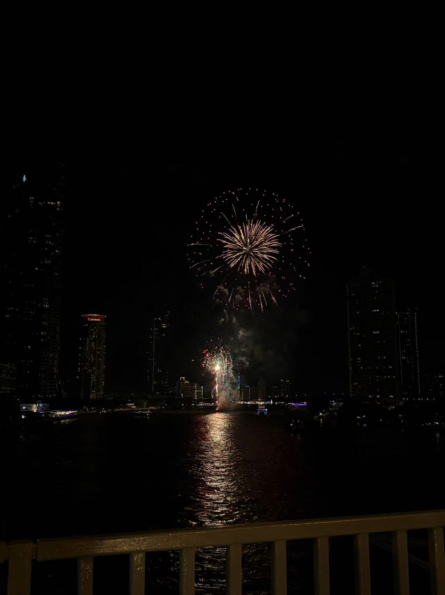

Travel
새로운 도시와 문화를 경험하며 다양한 시선을 배우는 것을 좋아합니다.
About Me

저는 새로운 장소를 여행하고, 마음에 드는 순간을 사진으로 남기는 것을 좋아합니다. 운동으로 에너지를 얻고, 음악을 들으며 하루의 분위기를 기억합니다.
이 웹사이트는 제가 경험한 여행, 도시, 취미, 감정을 한 곳에 모은 개인 다이어리입니다. 사진과 짧은 글을 통해 저만의 분위기를 표현했습니다.
My Interests
새로운 도시와 문화를 경험하며 다양한 시선을 배우는 것을 좋아합니다.
일상과 여행 속 특별한 순간들을 사진으로 기록하는 것을 즐깁니다.
운동을 통해 에너지를 얻고 건강한 생활 습관을 유지하려고 노력합니다.
음악은 일상과 여행의 분위기를 더욱 특별하게 만들어 주는 중요한 취미입니다.
Life Routine
새로운 장소에 가면 그 공간의 색감, 공기, 분위기를 먼저 느껴봅니다.
기억하고 싶은 순간을 사진으로 남기고, 그날의 감정을 짧은 글로 정리합니다.
사진을 다시 보며 여행, 음악, 운동, 일상 속에서 얻은 에너지를 떠올립니다.
Visual Diary
여행과 일상 속에서 남긴 사진들을 주제별로 모아 소개합니다.

공항에서 시작된 여행의 설렘과 새로운 출발의 기분을 담았습니다.

도시의 빛과 풍경이 만들어내는 차분한 분위기를 기록했습니다.

평범한 길과 공간 안에서 발견한 일상의 아름다움을 담았습니다.

제가 좋아하는 색감, 공간, 분위기를 모아 개인적인 무드를 표현했습니다.

여행 중 마주한 여유로운 순간과 따뜻한 기억을 담았습니다.

다양한 문화와 장소에서 느낀 인상 깊은 순간을 기록했습니다.

사진과 작은 그림, 개인적인 기억을 함께 모은 기록입니다.
Favorites